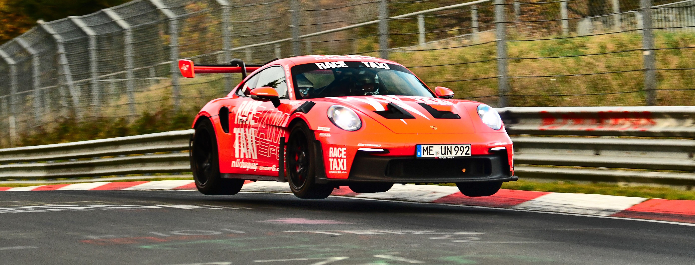

Fahrermodus
Schnelles Melden durch den Beifahrer und distanzbasierte Warnungen während der Fahrt. Die Bedienung durch den Fahrer darf nur erfolgen, wenn das Fahrzeug sicher steht.
Saison

Buche deine GetSpeed Experience direkt über Nürburg Guide und unterstütze damit unsere Arbeit rund um die Nordschleife.
Schnelles Melden durch den Beifahrer und distanzbasierte Warnungen während der Fahrt. Die Bedienung durch den Fahrer darf nur erfolgen, wenn das Fahrzeug sicher steht.
Gelbe Sektoren machen lokale Gefahrenstellen sichtbar, rote Statusmeldungen weisen auf eine vollständige Streckensperrung bei schwerwiegenden Ereignissen hin.
Wetter am Ring, Touristenfahrten-Kalender, Webcams, Erstfahrer-Infos sowie SOS- und Notfallfunktionen.
Zuschauer-Spots, Parkplätze, Gastronomie, Tankstellen, Ring-Locations und weitere Orte in der Region.
Animationen an oder aus, Warndistanz spät, standard oder früh sowie verschiedene Warntöne.
Deutsch, Englisch, Niederländisch, Französisch, Italienisch und Spanisch.
Nürburg Guide setzt auf die Community. Meldungen können helfen, andere früher zu warnen. Trotzdem gilt immer: Offizielle Flaggen, Lichtsignale, Streckenregeln und Anweisungen vor Ort haben Vorrang.
Nürburg Guide ist eine unabhängige, community-getriebene App und steht in keiner Verbindung zur Nürburgring 1927 GmbH & Co. KG. Nutzer-Meldungen können unvollständig oder falsch sein. Alle Informationen werden ohne Gewähr bereitgestellt; eine Haftung ist – soweit gesetzlich zulässig – ausgeschlossen. Folge immer den offiziellen Streckenregeln und den Anweisungen vor Ort.